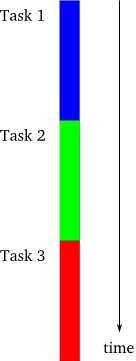
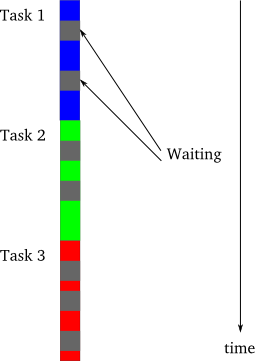
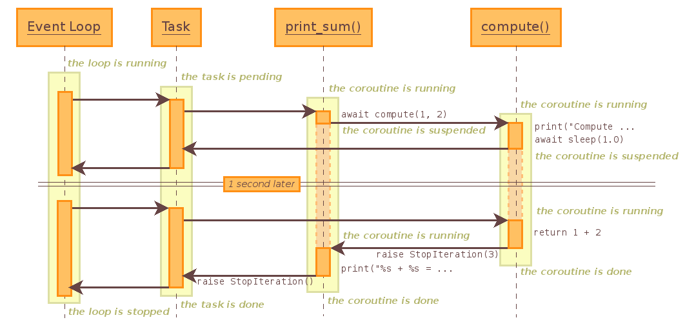

class: center, middle # IEMS 5780<br/>Building and Deploying Scalable<br/>Machine Learning Services ### Lecture 9 - Concurrent Programming (II) #### Albert Au Yeung<br/>8th November, 2019 --- class: middle, center # Asychronous Programming --- class: equal-split # Asynchronous Programming - Consider the two models of programming we have came across so far - Ref: http://krondo.com/in-which-we-begin-at-the-beginning/ .column-left[ <center>  </center> - The single thread synchronous model - Everything is executed sequentially - Latter tasks can consume output of earlier tasks that have completed ] .column-right[ <br/><br/> <center> <img src="img/threaded.png" width="60%"> </center> - The multi-thread or multi-process parallel model - Tasks are executed in parallel - If tasks need to communicate with each other they need shared objects ] --- class: split # Asynchronous Programming .column-left[ - There is also a model called **asynchronous programming** - All tasks run in a single thread, but their execution can be **interleaved** - NO two tasks will be executed at exactly the same time - **The programmer would decide** when to switch from one task to another task (in contrast to the multi-thread model) - **Why** do we need such a model? ] .column-right[ <center> <img src="img/async.png" width="50%"> </center> ] --- class: split # Asynchronous Programming .column-left[ - Both **computation** and **I/O** operations will be involved in many tasks (e.g. sorting a list of numbers vs. loading data from a DB) - For a **<span style="color: #4455AA">single-threaded synchronous model</span>** - One task has to wait until another task has finished, even when the previous task is blocking - For a **<span style="color: #44AA55">multi-threading model</span>** - Different threads must either carry out independent tasks, or use some sophisticated way to communicate among each other ] .column-right[ <center>  </center> - A task may invoke quite a lot of blocking function calls during with the CPU is idling ] --- class: split # Asynchronous Programming .column-left[ - An asynchronous program will **switch** to perform another task when one task is blocked by some I/O operations - Such a program will only **block** when no tasks at hand can make any progress (e.g. all tasks are waiting for downloading something from the Internet) - Thus, an asynchronous program is also called a **non-blocking** program ] .column-right[ <center> <img src="img/async.png" width="40%"> <br/><br/> The asynchronous model </center> ] --- # Asynchronous Programming ### When should we use asynchronous programming? 1. The number of tasks to execute is **large**, so it is likely that there is always at least one task that can make progress 2. The tasks perform a lot of **I/O** operations (thus using a synchronous model will waste a lot of time) 3. The tasks are **independent** from one another, no or little inter-task communication is needed - Sounds like what a **server** needs to do when facing a lot of **clients**! --- # Revisit the TCP server ```python import socket server_socket = socket.socket(socket.AF_INET, socket.SOCK_STREAM) server_socket.bind((socket.gethostname(), 50001)) server_socket.listen(10) while True: (client_socket, address) = server_socket.accept() data = client_socket.recv(1024) client_socket.sendall(data) client_socket.close() ``` - We have discussed how to use multi-threading or multi-processing to implement the TCP server - How about using the **asynchronous model**? --- # Non-blocking Socket Operations - By default, all socket methods are **blocking** (e.g. `accept()`, `recv()`, `send()`) - We can switch to use sockets **asynchronously** by using the `setblocking()` method - Then all socket methods will return **immediately** (!?) ```python # Create a TCP/IP socket server = socket.socket(socket.AF_INET, socket.SOCK_STREAM) server.setblocking(0) ... ``` --- # Non-blocking Socket Operations - What happen after we set sockets to non-blocking? - `accept()`, `recv()`, `send()` may return **without having done anything**! - We need a way to know whether calling that method will result in something done - Only call `accept()` when a client is trying to connect - Only call `recv()` when some data is ready to be read - Only call `send()` when we have successfully connected - **Soluton 1:** using the `select()` function in the `select` module - Ref: https://docs.python.org/3.6/library/select.html --- class: split # Using `select` .column-left[ <center> <img src="img/io_multiplexing.png" width="110%"> <br/> (From W. Richard Stevens. Unix Network Programming. 1990) </center> ] .column-right[ - `select()` is a function that you should use when you want to do **I/O multiplexing** - **I/O multiplexing**: switching between different I/O tasks when they are ready for reading or writing ] --- # Using `select` - To use select, you need to prepare **three** lists - A list of sockets you want to **read from** - A list of sockets you want to **write to** - A list of sockets you want to **check for errors** - It also returns three lists: - A list of sockets you can read from - A list of sockets you can write to - A list of sockets with errors ```python readables, writables, w_errors = select(inputs, outputs, [], 60) # 60 is timeout in seconds, empty lists will be returned upon timeout ``` - Note: on Unix/Linux systems, `select()` works on file handlers too (because everything is a file) --- # Using `select` ```python import socket from select import select server = socket.socket(socket.AF_INET, socket.SOCK_STREAM) server.setblocking(0) server.bind(('localhost', 56789)) server.listen(10) inputs = [server] # we want to accept (read) from this socket outputs = [] # nothing we want to write to so far while True: readables, writables, w_errors = select(inputs, outputs, [], 60) ... ``` --- # Using `select` ```python while True: readables, writables, w_errors = select(inputs, outputs, [], 60) for soc in readables: if soc is server: # server socket is readable, someone is connecting client_socket, address = soc.accept() client_socket.setblocking(0) # also set to non-blocking inputs.append(client_socket) # a socket that we want to read from else: # It is a client socket, let's read from it data = soc.recv(1024) if data: # Handle the data else: # Empty string, client has disconnected # Close this socket, remove it from all lists ``` --- # Using `select` - Continue... ```python for soc in writables: # This should be a client socket # Send something to it if you want to soc.send("Hello from Server") for soc in w_errors: # Socket has error # We should close the socket and remove it from all lists ... ``` - See complete example at [https://pymotw.com/3/select/](https://pymotw.com/3/select/) --- class: middle, center # Asynchronous I/O --- # Introduction - `asyncio` is included in the standard library starting from Python 3.4 - A single-thread asynchronous model of programming - `asyncio` allows you to switch between different **coroutines** when there are blocking calls - Before diving into `asyncio`, let's learn about **generators** and **coroutines** <center> <img src="img/event_loop.png" width="65%"> <br/> (Ref: https://eng.paxos.com/python-3s-killer-feature-asyncio) </center> --- class: split # Iterators .column-left[ - In Python, we can use a for loop to loop over: - a list (e.g. `[1, 2, 3, 4, 5]`) - a dictionary (e.g. `{1: "a", 2: "b"}`) - a file (e.g. `for line in infile: ...`) - Things that can be iterated over are called **iterable objects** - We can turn iterable objects into **iterators** using the `iter()` function ] .column-right[ ```python >>> l = iter([1, 2, 3, 4]) >>> l <list_iterator object at ...> >>> next(l) 1 >>> next(l) 2 >>> next(l) 3 >>> next(l) 4 ``` ] --- # Generators ### **Generator** functions provide a simplified way to create iterators - Generator returns a sequence of values, one at a time - It *generates* a new value **on-the-fly**, without the need to store all values in memory - Consider the `range()` function. How would you implement that? --- # Generators ### Our first attempt to implement the `range()` function ```python def my_range_1(n): nums = [] i = 0 while i < n: nums.append(i) i += 1 return nums ``` - **Problem**: if `n` is large (say 1,000,000), you end up creating a huge list of integers that eats up a lot of memory --- # Generators ### A better approach ```python def my_range_2(n): i = 0 while i < n: yield i i += 1 ``` - `yield` is used in place of `return`, now the function becomes a **generator** - When the line `yield i` is reached, the function will return the value of `i`, and **pause**, until we call its `next()` function again --- # Generators ```python nums = my_range_2(100) print(nums) # Prints something like <generator object my_range_2 at 0x7f4f480c4410> next(nums) # returns 0 next(nums) # returns 1 ... ``` - Your function becomes an **iterator**, which can be iterated over to return a new value at a time - The function is **NOT terminated**, because it remembers its current state - Now, you notice that a `for` loop is just a loop that helps you to call the `next()` function automatically if given a generator --- # Generators ### Another example: ```python def get_odds(n): """Return odd numbers up to n""" i = 0 while i < n: i += 1 if i % 2 == 0: continue yield i o = get_odds(100) next(o) # returns 1 next(o) # returns 3 ... ``` --- # Generators - You can also chain iterators: ```python def get_every_two_odds(odds): i = 0 for o in odds: if i % 2 == 0: yield o i += 1 nums = get_every_two_odds(get_odds(100)) next(nums) # returns 1 next(nums) # returns 5 next(nums) # returns 9 ``` --- # From Generators to Coroutines - For generators, we use the `yield` keyword to specify where the function should return a value and stop, waiting for the next call of `next()` - What if we want something the other way round: we want a function to pause and wait for something to **be sent** to it? - Consider an example: we would like to write function that returns whether a given number `x` is a divsor of a given number `n` (e.g. if n = 10, x = 2, then this function returns `True`) ```python def is_divisor(x, n): return n % x == 0 is_divisor(2, 10) # returns True is_divisor(3, 32) # returns False is_divisor(5, 55) # returns True ``` --- # From Generators to Coroutines - We can also re-write this in the form of a **coroutine**, one that would **wait for an input** to be sent into it ```python def is_divisor(n): while True: x = yield yield n % x == 0 d = is_divisor(55) next(d) d.send(2) # returns False next(d) d.send(5) # returns True next(d) d.send(11) # returns True ``` --- class: split # Coroutines .column-left[ ```python def is_divisor(n): while True: x = yield yield n % x == 0 d = is_divisor(55) next(d) d.send(2) # returns False next(d) d.send(5) # returns True next(d) d.send(11) # returns True ``` ] .column-right[ - The first `yield` is for waiting input to be sent into the function - The second `yield` is for emitting a value - We need to call `next()` to make the function arrives at the line `x = yield` again. ] --- # Coroutines - Another way to implement the `is_divisor` coroutine ```python def is_divisor(n): x = 1 while True: divisible = False if n % x == 0: divisible = True x = yield divisible d = is_divisor(55) next(d) # this would return True d.send(2) # returns False d.send(5) # returns True d.send(11) # returns True ``` --- class: split # Coroutines .column-left[ ```python def is_divisor(n): cnt = -1 x = 1 while True: divisible = False if n % x == 0: cnt += 1 divisible = True x = yield (divisible, cnt) d = is_divisor(55) next(d) # this would return True d.send(2) # returns (False, 0) d.send(5) # returns (True, 1) d.send(11) # returns (True, 2) ``` ] .column-right[ - A coroutine stores its internal **state** - For example, we can count how many times we see a divisor of `n` ] --- # More on Coroutines - **Coroutines** can be considered as generalized **subroutines** (a sequence of instructions that carry out some tasks) - Coroutines have **multiple entry points** for suspending and resuming execution (unlike subroutines) - Coroutines allows a programmer to **explicitly** handle context changes (when to switch from one task to another task) - (Compare this with multi-threading or multi-processing) --- class: split # Event Loop .column-left[ - We will discuss more about `asyncio` in the next lecture, but let's get to know about the **event loop** first - Event loop: *"a programming construct that waits for and dispatches events or messages in a program"* - It keeps on waiting for events to happen, and execute different tasks depending on what event happens Ref: [A guide to asynchronous programming in Python with asyncio](https://medium.freecodecamp.org/a-guide-to-asynchronous-programming-in-python-with-asyncio-232e2afa44f6) ] .column-right[ <center> <img src="img/event_loop_2.jpg" width="100%"> </center> ] --- class: middle, center # `asyncio` --- # `asyncio` - A framework for asynchronous programming in Python - For writing **single-threaded** concurrent code using coroutines - Some important concepts: 1. Event Loop 2. Coroutines 3. Futures / Tasks --- # Event Loop - An event loop is the **central execution device** in `asyncio` - It is a program construct that waits for something (**events**) to happen, and then act on them - It can register **tasks** to be executed, execute them, deplay or cancel them - It allows two or more functions to run together **co-operatively** - Example of **events**: - A client has connected to the server - A client has sent a certain request - Finished downloading a file from a remote server - Each event may be associated with some functions (**callbacks**), which will be invoked when the event is triggered --- # Futures / Tasks ### A **future** is an object that is supposed to have a **result** in the future - **Task** is a scheduler, it schedule the execution of a coroutine - Responsible for executing a coroutine object in an event loop - A task will suspend a coroutine if the it has to wait for some futures to be completed - The event loop only runs **one** task at a time - When a task waits for the completion of a future, the event loop executes a new task (if available) --- # Example ```python import asyncio async def fake_io_operation(): # simulate some long I/O operations print("Perform I/O now...") await asyncio.sleep(1) print("I/O completed") async def compute_square(x): print("Compute square of %d" % x) await fake_io_operation() print("Square of %d is %d" % (x, x*x)) tasks = [] for i in [4, 5, 6, 7]: tasks.append(asyncio.ensure_future(compute_square(i))) loop = asyncio.get_event_loop() loop.run_until_complete(asyncio.wait(tasks)) loop.close() ``` --- class: split # Example (continue) .column-left[ ```python import asyncio async def fake_io_operation(): print("Perform I/O now...") await asyncio.sleep(1) print("I/O completed") async def compute_square(x): print("Compute square of %d" % x) await fake_io_operation() print("Square of %d is %d" % (x, x*x)) ... ``` ] .column-right[ - The `async` keyword changes a function into a **coroutine** (a *native coroutine*) - `await something` will suspect the coroutine at that point, until that *something* is completed - Calling a **coroutine function** does not start it, it will just return a **coroutine object** ] --- class: split # Example (continue) .column-left[ ```python ... tasks = [] for i in [4, 5, 6, 7]: tasks.append( asyncio.ensure_future( compute_square(i))) loop = asyncio.get_event_loop() loop.run_until_complete( asyncio.wait(tasks)) loop.close() ``` ] .column-right[ - `ensure_future` creates a task that wraps a **coroutine** (in this case the `computer_square()` function) - `asyncio.wait(tasks)` wraps all tasks in a **coroutine** so that they can be passed to the event loop - `run_until_complete` will run all the **tasks** passed to it until everything is completed ] --- class: split # Example (continue) .column-left[ - What would happen if we execute the above script? - Observations: - When one task reaches the `asyncio.sleep(1)` line, **another** task is executed - When all tasks reaches that line, the whole program is **blocked** (why?) - The program terminates when all tasks are completed ] .column-right[ ```bash Compute square of 4 Perform I/O now... Compute square of 5 Perform I/O now... Compute square of 6 Perform I/O now... Compute square of 7 Perform I/O now... I/O completed 16 I/O completed 25 I/O completed 36 I/O completed 49 ``` ] --- # Another Example - Consider another example (from https://docs.python.org/3/library/asyncio-task.html) ```python import asyncio async def compute(x, y): print("Compute %s + %s ..." % (x, y)) await asyncio.sleep(1.0) return x + y async def print_sum(x, y): result = await compute(x, y) print("%s + %s = %s" % (x, y, result)) loop = asyncio.get_event_loop() loop.run_until_complete(print_sum(1, 2)) loop.close() ``` --- # Another Example (continue) <center>  </center> --- class: split # Getting the Result of a Coroutine .column-left[ - What if you want to get back the results of the coroutines? ```python ... tasks = [] for i in [4, 5, 6, 7]: tasks.append( asyncio.ensure_future(compute_square(i))) loop = asyncio.get_event_loop() results, _ = loop.run_until_complete( asyncio.wait(tasks)) loop.close() for f in results: print(f.result()) ``` ] .column-right[ ```bash Compute square of 4 Perform I/O now... Compute square of 5 Perform I/O now... Compute square of 6 Perform I/O now... Compute square of 7 Perform I/O now... I/O completed I/O completed I/O completed I/O completed 16 25 49 36 ``` ] --- # Using `asyncio.gather()` - `asyncio.gather()` focuses on gathering all results for you - It may not run the coroutines in order, but the results will be in order as the input ```python ... loop = asyncio.get_event_loop() coros = [compute_square(i) for i in range(5)] all_futures = asyncio.gather(*coros) loop = asyncio.get_event_loop() results = loop.run_until_complete(several_futures) loop.close() # results is a list: [0, 1, 4, 9, 16] ``` --- # Event Loop - Notice that we must use `run_until_complete()` to make sure that all tasks have been completed - `ensure_future()` creates a future from the coroutine function, it also tries to execute the task - What if we do not wait for the completion of the task(s) (try removing the line with `run_until_complete()`)? ```bash Task was destroyed but it is pending! task: <Task pending coro=<compute_square() running at example2.py:8>> Task was destroyed but it is pending! task: <Task pending coro=<compute_square() running at example2.py:8>> Task was destroyed but it is pending! task: <Task pending coro=<compute_square() running at example2.py:8>> Task was destroyed but it is pending! task: <Task pending coro=<compute_square() running at example2.py:8>> sys:1: RuntimeWarning: coroutine 'compute_square' was never awaited ``` --- # Concurrent Execution of Many Tasks - Do we get speed up using `asyncio`? Let's try a test ```python import asyncio async def long_task(x): print("Wait for 1/{:d} seconds...".format(x)) await asyncio.sleep(1.0 / x) return 1.0 / x coroutines = [long_task(i) for i in range(1, 101)] loop = asyncio.get_event_loop() all_futures = asyncio.gather(*coroutines) loop.run_until_complete(all_futures) loop.close() ``` --- # Concurrent Execution of Many Tasks - We can measure the time of the execution of the script by: ```bash $ time python3 example.py ... real 0m1.099s user 0m0.100s sys 0m0.004s ``` - If the tasks are executed sequentially, it would require 1 + 1/2 + 1/3 + ... + 1/100 = **5.187 seconds** - When a task has to wait, the event loop will start to execute another task, thus almost all tasks are started at the same time. --- class: center, middle # End of Lecture 9